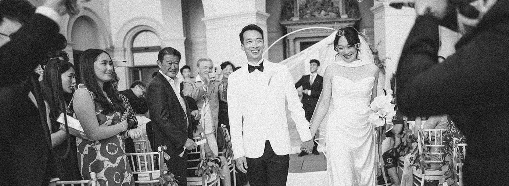

Die neu gedachte Verbindung
von Film & Fotografie

Walking Weddings vereint Hochzeitsfilm und -fotografie zu einer einzigartigen Erzählung eures Tages. Von der intimen Zeremonie bis zur ausgelassenen Feier — wir fangen jeden Moment aus zwei Perspektiven ein, perfekt aufeinander abgestimmt, von einem Team.
Mehr Erfahren